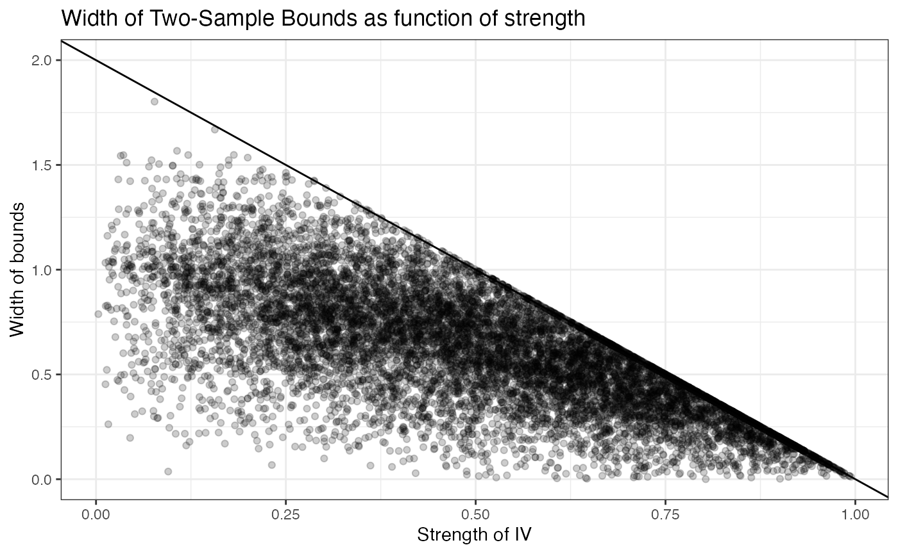
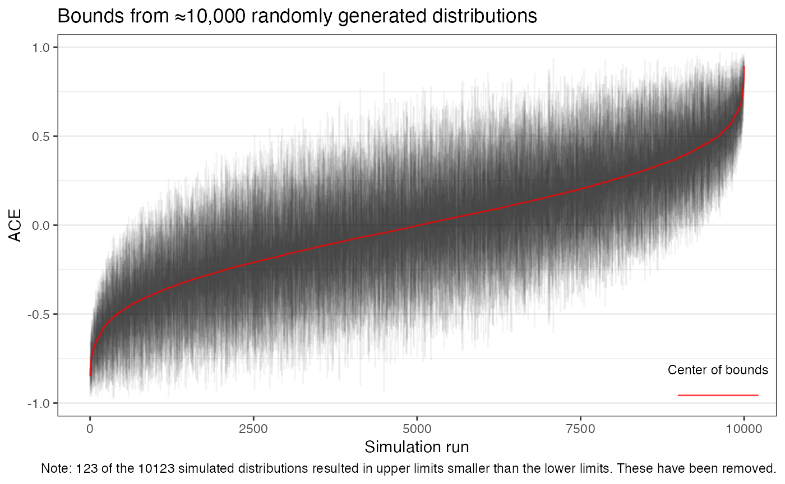
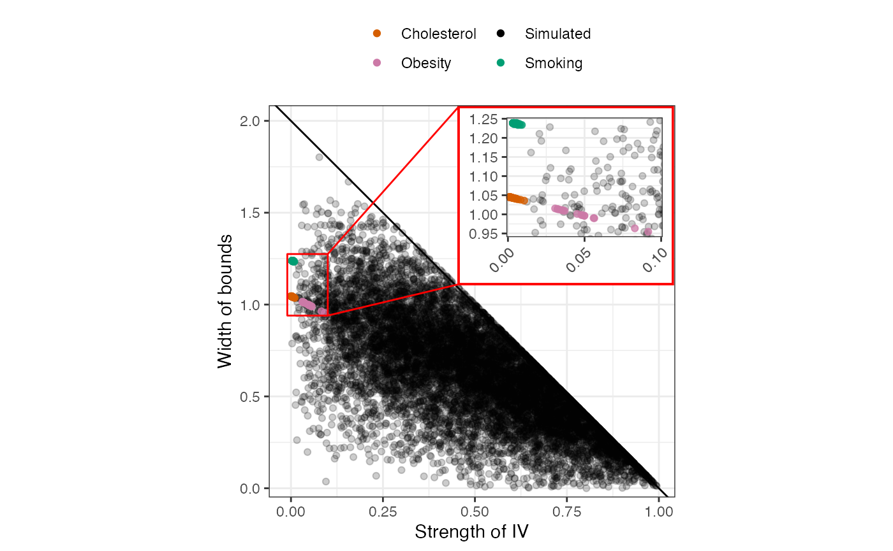

Here we will see how bounds on the ATE behaves when derived from a single IV in two-sample data. We know that the width of the bounds is bounded above by \(2\cdot (1 - ST_X)\), when monotonicity of the effect of \(Z\) on both \(X\) and \(Y\) holds. Here, we will see through simulations, that the same seems to hold without these assumptions.
We will consider IVs that take three levels. To generate values of \(P(X = 1 | Z = z)\) we simply choose three values from a uniform distribution. The matrices obtained from the polymake program give us some constraints on the values of \(P(Y = 1 | Z = z)\). These are included below.
library(tidyverse, quietly = TRUE) ATEBounds:::matrices_from_polymake %>% filter(!x_monotone, !y_monotone, data_format == "bivariate", n_z_levels == 3) %>% pull(matrix) %>% .[[1]] %>% filter(alpha == 0) %>% select(where(~sum(abs(.x)) > 0)) %>% filter(rowSums(abs(.)) > 1) %>% pander::pander()
| gamma01 | gamma02 | gamma03 | gamma11 | theta11 | theta12 | theta13 |
|---|---|---|---|---|---|---|
| 1 | 0 | -1 | 1 | 0 | 0 | 0 |
| 1 | -1 | 0 | 1 | 0 | 0 | 0 |
| 1 | -1 | 0 | 0 | 1 | 1 | 0 |
| 1 | 0 | -1 | 0 | 1 | 0 | 1 |
| 3 | -1 | 0 | 2 | -1 | -1 | 0 |
| 3 | 0 | -1 | 2 | -1 | 0 | -1 |
| 1 | 0 | 0 | 1 | 0 | -1 | 0 |
| 1 | 0 | 0 | 1 | 0 | 0 | -1 |
| 2 | 1 | -1 | 2 | 0 | -1 | -1 |
| 2 | -1 | 1 | 2 | 0 | -1 | -1 |
| 1 | 1 | 0 | 2 | -1 | -1 | 0 |
| 0 | 1 | -1 | 0 | 0 | 1 | 1 |
| 0 | -1 | 1 | 0 | 0 | 1 | 1 |
| 1 | 0 | 0 | 1 | -1 | 0 | 0 |
| -1 | 0 | 1 | 0 | 1 | 0 | 1 |
| -1 | 1 | 0 | 0 | 1 | 1 | 0 |
| 1 | 0 | 1 | 2 | -1 | 0 | -1 |
The function simulate_gammas_from_thetas takes a vector of length 3 of values of \(P(X = 1 | Z = z)\), and returns a vector of length 3 of values of \(P(Y = 1 | Z = z)\) such that no constraint is violated. The comments in the function below refer to the corresponding row in the matrix of verifiable constraints above.
simulate_gammas_from_thetas <- function(thetas){ gammas <- vector("numeric", length = 3) gammas[1] <- runif(1) gammas[2] <- runif(1, min = max(0, gammas[1] - thetas[1] - thetas[2], # row 3 gammas[1] + thetas[1] + thetas[2] - 2), # row 5 max = min(1, gammas[1] - thetas[1] - thetas[2] + 2, # row 11 gammas[1] + thetas[1] + thetas[2]) # row 16 ) gammas[3] <- runif(1, min = max(0, gammas[1] - thetas[1] - thetas[3], # row 4 gammas[1] + thetas[1] + thetas[3] - 2, # row 6 gammas[2] - thetas[2] - thetas[3], # row 12 gammas[2] + thetas[2] + thetas[3] - 2), # row 9 max = min(1, gammas[2] - thetas[2] - thetas[3] + 2, # row 10 gammas[2] + thetas[2] + thetas[3], # row 13 gammas[1] - thetas[1] - thetas[3] + 2, # row 17 gammas[1] + thetas[1] + thetas[3])) # row 15 return(gammas) }
We generate \(10,000\) sets of distributions.
Here, we define the strength of \(Z\) on \(X\) as \(\max_{z_1,z_2} \left | P(X = 1 | Z = z_1) - P(X = 1 | Z = z_2) \right |\), and the strength of \(Z\) on \(Y\) similarly as \(\max_{z_1,z_2} \left | P(Y = 1 | Z = z_1) - P(Y = 1 | Z = z_2) \right |\).
We then calculate the strength of \(Z\) on \(X\), \(Z\) on \(Y\), and find the bounds. This is where we notice that some of the probability distributions result in bounds with an upper bound that is less than the lower bound. We generate extra random distributions such that the total number of distributions with correctly ordered bounds is \(10,000\).
if(!file.exists(here::here("vignettes_data/bivariate_bounds.Rds"))){ library(furrr) plan(multisession, workers = n_cores) bounds <- sim_probs %>% mutate(strength_x = future_map_dbl(thetas, ~max(abs(outer(.x, .x, `-`)))), strength_y = future_map_dbl(gammas, ~max(abs(outer(.x, .x, `-`)))), bounds = future_map2(thetas, gammas, ~get_bounds(thetas = .x, gammas = .y, stop = FALSE, warning = FALSE)), violations = future_map_lgl(bounds, "constraints_violated"), intervals = future_map(bounds, "interval")) %>% unnest_wider(intervals) %>% mutate(width = upper - lower) n_extras <- 0 while(sum(bounds$width >= 0) < nrow(sim_probs) & n_extras < 100){ n_extras <- n_extras + 1 plan(multisession, workers = 2) bounds_extra <- tibble(j = nrow(bounds) + 1:(nrow(sim_probs) - sum(bounds$width >= 0))) %>% mutate(thetas = future_map(j, ~runif(n = 3, min = 0, max = 1), .options = furrr_options(seed = TRUE)), gammas = future_map(thetas, simulate_gammas_from_thetas, .options = furrr_options(seed = TRUE)), strength_x = future_map_dbl(thetas, ~max(abs(outer(.x, .x, `-`)))), strength_y = future_map_dbl(gammas, ~max(abs(outer(.x, .x, `-`)))), bounds = future_map2(thetas, gammas, ~get_bounds(thetas = .x, gammas = .y, stop = FALSE, warning = FALSE)), violations = future_map_lgl(bounds, "constraints_violated"), intervals = future_map(bounds, "interval")) %>% unnest_wider(intervals) %>% mutate(width = upper - lower) bounds <- bind_rows(bounds, bounds_extra) } write_rds(bounds, here::here("vignettes_data/bivariate_bounds.Rds")) } else { bounds <- read_rds(here::here("vignettes_data/bivariate_bounds.Rds")) }
The plot below shows the width plotted against the strength of \(Z\) on both \(X\) and \(Y\). The black line has slope \(-2\) and intercept \(2\) – i.e. it represents the upper bound on the width derived under the two monotonicity assumptions.
width_vs_strength <- bounds %>% filter(!violations, upper > lower) %>% ggplot(aes(x = strength_x, y = width)) + geom_point(alpha = 0.2) + geom_abline(slope = -2, intercept = 2) + lims( y = c(0,2) ) + labs(x = "Strength of IV", y = "Width of bounds") + theme_bw() width_vs_strength + labs(title = "Width of Two-Sample Bounds as function of strength")

ggsave(plot = width_vs_strength, filename = here::here("figures", "bivariate_width_vs_strength.png"), dpi = 300, width = 4, height = 2.86)
Here are all the bounds:
all_bounds_plot <- bounds %>% filter(!violations, upper > lower) %>% select(contains("strength"), upper, lower) %>% arrange((upper + lower)/2) %>% mutate(id = row_number()) %>% ggplot(aes(x = id, y = (upper + lower)/2)) + geom_errorbar( aes(ymin = lower, ymax = upper), width = 0.001, alpha = 0.05 ) + geom_line( aes(color = "Center of bounds"), alpha = 0.75 )+ labs( y = "ATE", x = "Simulation run", color = "" ) + guides( color = guide_legend(label.position = "top") ) + scale_color_manual(values = "red") + theme_bw() + theme( panel.grid.major.x = element_blank(), panel.grid.minor.x = element_blank(), legend.position = c(1, 0), legend.justification = c(1, 0), legend.background = element_blank(), legend.key = element_blank() ) all_bounds_plot + labs(title = "Bounds from ≈10,000 randomly generated distributions", caption = paste("Note:", sum(bounds$upper <= bounds$lower), "of the", nrow(bounds), "simulated distributions resulted in upper limits smaller than the lower limits. These have been removed."))

ggsave(plot = all_bounds_plot, filename = here::here("figures", "all_bivariate_bounds.png"), dpi = 300, width = 4, height = 2.86)
Many of these randomly generated distributions result in rather wide bounds, as can be seen from the table below.
proportion_of_widths_greater_than <- bounds %>% filter(width >= 0) %>% group_by(Strength = cut(strength_x, breaks = c(0, 0.05, 0.1, 0.25, 0.5, 1), include.lowest = TRUE)) %>% summarize( w = c(1, 0.75, 0.5), prop = map_dbl(c(1, 0.75, 0.5), ~mean(width > .x)) ) %>% mutate(w = glue::glue("w = {w}")) %>% pivot_wider(names_from = w, values_from = prop)
## `summarise()` has grouped output by 'Strength'. You can override using the `.groups` argument.pander::pander(proportion_of_widths_greater_than)
| Strength | w = 1 | w = 0.75 | w = 0.5 |
|---|---|---|---|
| [0,0.05] | 0.4699 | 0.7831 | 0.8916 |
| (0.05,0.1] | 0.4641 | 0.7238 | 0.895 |
| (0.1,0.25] | 0.3262 | 0.7045 | 0.9233 |
| (0.25,0.5] | 0.1361 | 0.4974 | 0.8384 |
| (0.5,1] | 0 | 0.07557 | 0.3797 |
We save a few summaries for the manuscript.
We reproduce the plot of the width vs. strength, but include bounds from three real world examples. The first chunk below essentially summarizes the process laid out in vignette("example_analysis") and wraps it in a simple function.
library(TwoSampleMR) library(magrittr) find_intercept <- function(beta1, p_outcome, pz, interval = c(-5, 5), zs = 0:2){ uniroot(f = function(beta0) sum((1+exp(-beta0-beta1*zs))^(-1) * pz) - p_outcome, interval = interval) } ao <- available_outcomes() real_bounds <- function(exposure_id, outcome_id, ao = TwoSampleMR::available_outcomes()){ exposure_experiment <- ao %>% filter(id == exposure_id) exposure_instruments <- extract_instruments(outcomes = exposure_experiment$id) outcome_experiment <- ao %>% filter(id == outcome_id) outcome_data <- extract_outcome_data(snps = exposure_instruments$SNP, outcomes = outcome_experiment$id) harmonized_data <- harmonise_data(exposure_instruments, outcome_data) # %>% as_tibble() pop_probs <- tibble(regression = c("outcome", "exposure"), p_outcome = c(outcome_experiment %$% { ncase / (ncase + ncontrol) }, exposure_experiment %$% { ncase / (ncase + ncontrol) })) prep_for_bounds <- harmonized_data %>% rowwise() %>% mutate(samplesize.exposure = exposure_experiment$ncase + exposure_experiment$ncontrol, samplesize.outcome = outcome_experiment$ncase + outcome_experiment$ncontrol, ave_eaf = weighted.mean(x = c_across(c(eaf.exposure, eaf.outcome)), w = c_across(c(samplesize.exposure, samplesize.outcome)), na.rm = TRUE)) %>% select(SNP, contains("beta"), ave_eaf) %>% pivot_longer(contains("beta")) %>% separate(name, into = c("variable", "regression"), sep = "\\.") %>% pivot_wider(names_from = variable, values_from = value) %>% mutate(`P(Z = 2)` = (1 - ave_eaf)^2, `P(Z = 1)` = 2*ave_eaf*(1 - ave_eaf), `P(Z = 0)` = ave_eaf^2) include_intercept <- prep_for_bounds %>% left_join(pop_probs) %>% rowwise() %>% mutate(find_intercept = list(find_intercept(beta1 = beta, p_outcome = p_outcome, pz = c(`P(Z = 0)`, `P(Z = 1)`, `P(Z = 2)`), interval = c(-10, 10))), beta0 = find_intercept$root, `thetas/gammas` = list(1/(1+exp(-beta0 - 0:2*beta)))) bivariate_bounds <- include_intercept %>% select(-find_intercept, -beta0, -p_outcome, -ave_eaf, coefs = beta) %>% mutate(regression = if_else(regression == "outcome", "gammas", "thetas")) %>% pivot_wider(names_from = regression, values_from = c(`thetas/gammas`, coefs)) %>% rename_with(.cols = starts_with("thetas"), ~str_remove_all(.x, "thetas/gammas_")) %>% rowwise() %>% mutate(bivariate_bounds = list(get_bounds(thetas = thetas, gammas = gammas, stop = FALSE, warning = FALSE)), interval = list(bivariate_bounds$interval), constraints_violated = bivariate_bounds$constraints_violated) %>% ungroup() %>% unnest_wider(interval) return(bivariate_bounds) }
We find bounds of the average treatment effect of high cholesterol on incidence of heart attack, smoking on incidence of lung cancer, and obesity on incidence of heart attack.
real_data_biv_bounds <- tibble(exposure = c("Cholesterol", "Smoking", "Obesity"), outcome = c("Heart Attack", "Lung Cancer", "Heart Attack"), exposure_id = c("ukb-a-108", "ukb-d-20116_0", "ieu-a-90"), outcome_id = c("ukb-a-434", "ukb-d-40001_C349", "ukb-a-434")) %>% rowwise() %>% mutate(source = exposure, bounds = list(real_bounds(exposure_id = exposure_id, outcome_id = outcome_id, ao = ao))) %>% ungroup() %>% unnest(bounds) %>% mutate(width = upper - lower, strength_x = map_dbl(thetas, ~max(abs(outer(.x, .x, "-")))))
## Extracting data for 54 SNP(s) from 1 GWAS(s)## Harmonising Non-cancer illness code self-reported: high cholesterol || id:ukb-a-108 (ukb-a-108) and Vascular/heart problems diagnosed by doctor: Heart attack || id:ukb-a-434 (ukb-a-434)## Removing the following SNPs for being palindromic with intermediate allele frequencies:
## rs28601761, rs7213086## Joining, by = "regression"## Extracting data for 84 SNP(s) from 1 GWAS(s)## Harmonising Smoking status: Never || id:ukb-d-20116_0 (ukb-d-20116_0) and Underlying (primary) cause of death: ICD10: C34.9 Bronchus or lung, unspecified || id:ukb-d-40001_C349 (ukb-d-40001_C349)## Removing the following SNPs for being palindromic with intermediate allele frequencies:
## rs11693702, rs1492546, rs2240294, rs264974, rs568599## Joining, by = "regression"## Extracting data for 17 SNP(s) from 1 GWAS(s)## Harmonising Obesity class 1 || id:ieu-a-90 (ieu-a-90) and Vascular/heart problems diagnosed by doctor: Heart attack || id:ukb-a-434 (ukb-a-434)## Joining, by = "regression"With these in hand, we create a plot of the width of the bounds for all instruments against the strength of the instruments.
customvermillion <- rgb(213/255,94/255,0/255) custombluegreen <- rgb(0/255,158/255,115/255) customreddishpurple<-rgb(204/255,121/255,167/255) customblue <- rgb(0/255,114/255,178/255) ## Create plot-within-plot width_vs_strength2 <- bounds %>% filter(!violations, upper > lower) %>% mutate(source = "Simulated") %>% bind_rows(real_data_biv_bounds) %>% ggplot(aes(x = strength_x, y = width, color = source)) + geom_point(aes(alpha = source == "Simulated")) + geom_abline(slope = -2, intercept = 2) + labs(x = "Strength of IV", y = "Width of bounds", color = "") + scale_color_manual(values = c("Cholesterol" = customvermillion, "Smoking" = custombluegreen, "Obesity" = customreddishpurple, "Simulated" = "black")) + scale_alpha_manual(values = c("TRUE" = 0.2, "FALSE" = 0.75)) + guides(color = guide_legend(override.aes = list(alpha = 1), nrow = 2), alpha = "none") + theme_bw() + theme(legend.position = "top") zoomed_in <- width_vs_strength2 + coord_fixed(ratio = 0.25, xlim = c(0, 0.1), ylim = range(real_data_biv_bounds$width)) + scale_x_continuous(breaks = c(0, 0.05, 0.1), expand = expansion(mult = 0, add = 0.001)) + labs(x = "", y = "") + guides(color = "none") + theme_bw() + theme(plot.background = element_blank(), plot.margin = unit(c(0.5,0.5, -0.1, -0.1), "lines"), axis.text.x = element_text(angle = 45, hjust = 1)) ## box_x1 <- -0.01 box_x2 <- 0.1 box_y1 <- 0.94 box_y2 <- 1.275 zoomed_in_x1 <- 0.455 zoomed_in_x2 <- 1.0375 zoomed_in_y1 <- 1.11 zoomed_in_y2 <- 2.075 (pip_figure <- width_vs_strength2 + coord_fixed(ratio = 0.5) + scale_y_continuous(limits = c(0, 2.075), expand = expansion(mult = 0, add = c(0.05, 0.01))) + geom_rect(inherit.aes = FALSE, xmin = zoomed_in_x1, xmax = zoomed_in_x2, ymin = zoomed_in_y1, ymax = zoomed_in_y2, fill = "white") + annotation_custom(grob = ggplotGrob(zoomed_in), xmin = 0.43, ymin = 1.05) + geom_path(data = data.frame(x = c(box_x2, box_x1, box_x1, box_x2, box_x2, zoomed_in_x1), y = c(box_y1, box_y1, box_y2, box_y2, box_y1, zoomed_in_y1)), aes(x = x, y = y), color = "red") + geom_path(data = data.frame(x = c(box_x2, zoomed_in_x1), y = c(box_y2, zoomed_in_y2)), aes(x = x, y = y), color = "red") + geom_rect(inherit.aes = FALSE, xmin = zoomed_in_x1, xmax = zoomed_in_x2, ymin = zoomed_in_y1, ymax = zoomed_in_y2, fill = NA, color = "red") )

ggsave(filename = here::here("figures/bivariate_width_vs_strength_pip.png"), plot = pip_figure, dpi = 300, width = 4, height = 4.7)